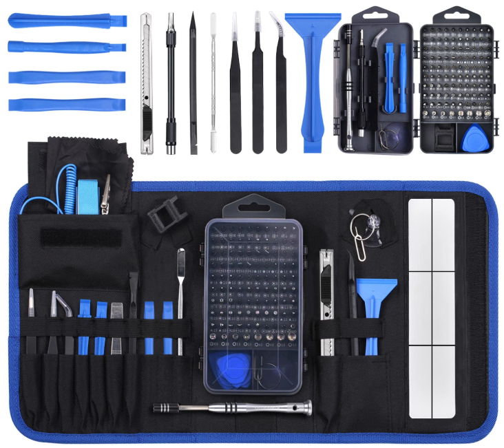
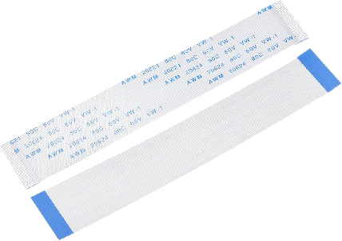
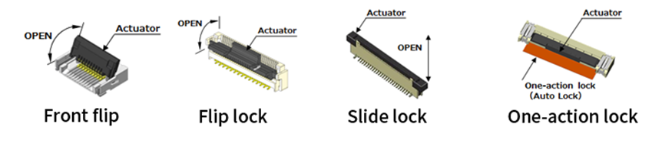
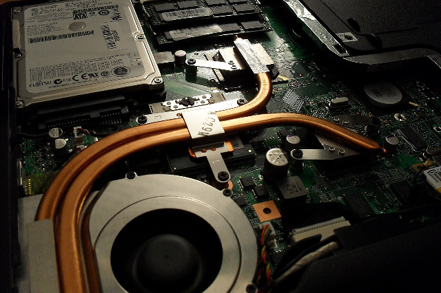

🧭 Durada estimada: 3 hores
Objectiu
Aplicar tècniques de desassemblatge no destructiu en equips portàtils, gestionant la seguretat elèctrica de
bateries integrades i la manipulació de connectors d'alta densitat (FFC/FPC), per executar la substitució de
components interns i el manteniment del sistema tèrmic.
Introducció
Si el manteniment d'un PC de sobretaula s'assembla a la mecànica de cotxes (peces grans, espai i estàndards), la
reparació d'un portàtil s'acosta més a la rellotgeria. En el disseny d'equips mòbils, la prioritat dels
enginyers és la compactació i la lleugeresa, sacrificant l'accessibilitat. Això significa que no hi ha dos
models que s'obrin igual: cargols ocults sota gomes antilliscants, pestanyes de plàstic que es trenquen si no es
pressionen en l'angle correcte i cables plans tan fins com un full de paper.
En aquest apartat, canviarem les eines grans per l'instrumental de precisió. Aprendrem a utilitzar palanques de
plàstic (spudgers) i pues per separar les carcases sense deixar marques estètiques al xassís ("marques de
guerra" que delaten un mal tècnic). Ens centrarem en la identificació i tractament delicat dels connectors ZIF
(Zero Insertion Force) i els cables flexibles que connecten el teclat, el trackpad i la pantalla a la placa
base.
Un focus crític serà la gestió tèrmica. Els portàtils pateixen molt més la calor que les torres. Veurem com
netejar els ventiladors tipus blower i substituir la pasta tèrmica en processadors que no tenen encapsulat
metàl·lic (silici nu), una operació d'alt risc. Finalment, abordarem la seguretat amb les bateries de Liti-Ió,
components químicament inestables que requereixen protocols estrictes de desconnexió abans de tocar cap circuit
per evitar curtcircuits catastròfics a la placa base.
Accés i Desassemblatge: Protocol "No Destructiu"
Obrir un portàtil modern és un trencaclosques d'enginyeria. A diferència de les torres, no hi ha un estàndard
ATX unificat. El primer pas és sempre la Desconnexió Elèctrica Total. Si la bateria és externa, s'extreu
immediatament. Si és interna (el més comú actualment), s'ha d'obrir la tapa inferior (Bottom Case) i
desconnectar el cable de la bateria de la placa base abans de tocar cap cargol metàl·lic. Això evita que un
tornavís caigut provoqui un curtcircuit en una línia de 19 V sempre activa.
Per a l'obertura, s'utilitzen eines específiques:
-
Tornavisos de Precisió: Phillips #00 i #0, i sovint Torx T5 per a ultrabooks (com els XPS o
MacBook).
-
Eines de Palanca (Spudgers): S'ha d'utilitzar sempre plàstic (pues de guitarra, spudgers de
niló) per separar les pestanyes de pressió que uneixen el Palmrest (reposamans) amb la base. L'ús de
tornavisos plans de metall està prohibit, ja que deixa marques irreversibles al xassís.
-
Cargols Ocults: El tècnic ha de buscar cargols amagats sota les gomes antilliscants o sota
etiquetes de garantia. Forçar una carcassa sense haver tret tots els cargols trencarà els suports de plàstic
intern (standoffs), deixant l'equip amb "joc" o cruixits permanents.

Equip de material de reparació complet
Organització de Cargoleria
Un error fatal en portàtils és assumir que tots els cargols són iguals. Encara que tinguin el mateix cap
(Phillips #0), els portàtils utilitzen longituds i gruixos diferents (M2x3, M2.5x5, M2x8) en el mateix panell.
-
El Risc del "Cargol Llarg": Si durant el remuntatge inserim un cargol de 5 mm en un forat
dissenyat per a un de 3 mm, el cargol travessarà el plàstic i perforarà la placa base o, pitjor encara,
sortirà per la part superior del reposamans, deixant un bony o forat visible a la carcassa.
-
Tècnica del Mapa: És imperatiu utilitzar una catifa magnètica de projecte o una simple
quadrícula dibuixada en paper. Els cargols s'han de col·locar en la catifa en la mateixa posició física
relativa que ocupaven a l'ordinador. Mai s'han d'amuntegar tots en un pot.
Separació de Carcasses
Un cop retirats tots els cargols, el portàtil no s'obre sol. Està subjecte per desenes de clips de retenció de
plàstic interns. La tècnica per alliberar-los sense trencar-los és específica:
-
El Punt d'Entrada: S'ha de buscar la unió (seam) entre la carcassa inferior i la superior.
Normalment, es comença per la zona de les frontisses o un racó on el plàstic cedeixi lleugerament.
-
Lliscar, no Palanquejar: Un cop inserida la pua de plàstic, no s'ha de fer palanca cap
amunt (això trenca el clip). La tècnica correcta és lliscar la pua al llarg de tota la ranura. Sentirem una
successió de "clacs"; és el so dels clips alliberant-se correctament.
-
Adhesius Ocults: En portàtils ultrabook moderns, sovint hi ha tires d'adhesiu de doble cara
al centre de la carcassa. Si després d'alliberar les vores la tapa no surt, no s'ha d'estirar amb força
bruta. Cal aplicar calor moderada (amb pistola d'aire calent a 80-100 °C o iOpener) per estovar la cola
sense fondre el plàstic.
Teclats: Reblats vs. Extraïbles
En la diagnosi d'obertura, cal identificar quin tipus d'integració té el teclat, ja que això determina la
viabilitat de la reparació:
-
Teclat Extraïble (Legacy): En equips antics o empresarials (ThinkPad clàssics), el teclat
es retira traient dos cargols per sota i empenyent des de dalt. És una reparació de 5 minuts.
-
Teclat Reblat (Modern): En el 90% dels portàtils actuals, el teclat està soldat amb reblons
de plàstic a la part inferior de la carcassa superior.
🧰 Consell pràctic: Per canviar el teclat, no n'hi ha prou amb treure cargols. Tècnicament,
s'hauria de trencar cada rebló i tornar a fondre plàstic, la qual cosa és inviable manualment. La solució
professional en aquests casos és substituir el Top Case sencer (teclat + plàstic + trackpad), la qual cosa
encareix significativament el recanvi, però garanteix l'acabat estructural.
Connectors de Cinta i Alta Densitat (ZIF/FFC)
L'interior d'un portàtil utilitza cables plans flexibles (FFC) connectats mitjançant sòcols ZIF (Zero Insertion
Force). No hi ha un estàndard únic, i identificar el mecanisme d'obertura abans de tocar-lo és vital: aplicar la
força en la direcció equivocada trencarà el plàstic, obligant sovint a soldar un connector nou o canviar la
placa sencera.

FPC Cable, 34 Pins 0,5 mm de tipus A
Classificarem els mecanismes en quatre tipus segons la seva obertura:
-
1. Pestanya Abatible Posterior (Back Flip-Lock): El més comú. La pestanya (actuador) està a
la part oposada a l'entrada del cable. S'aixeca 90° com una comporta. Risc: Estirar el cable sense
aixecar la comporta arrencarà els pins interns.
-
2. Pestanya Abatible Anterior (Front Flip-Lock): Molt freqüent en teclats. La pestanya està
situada just a l'entrada del cable. S'ha d'aixecar des de la vora del cable cap enrere (com obrir un
llibre). Risc Crític: Molts tècnics la confonen amb la Posterior i intenten fer palanca des del darrere.
Això trenca immediatament la frontissa de plàstic. Per tant, mira on és l'eix de rotació abans de fer
palanca.
-
3. Pestanya de Corredissa (Slide-Lock): Té dues petites "orelles" als extrems. No s'aixeca,
sinó que s'ha d'estirar horitzontalment (paral·lel a la placa) cap a fora uns mil·límetres per desbloquejar.
Risc: Intentar aixecar-ho com si fos un Flip-Lock trencarà les guies laterals.
-
4. Bloqueig Automàtic (One-Action / Push-Lock): Típic en dispositius moderns (i cables
d'alimentació interns). No té pestanya mòbil visible. El cable s'insereix a pressió i es queda retingut per
fricció o per unes dents internes. Per treure'l, simplement s'estira el cable (o d'una pestanya d'adherència
blava rígida que porta el mateix cable). Risc: Intentar "obrir" el connector amb una eina pensant que hi
ha una pestanya oculta acabarà deformant el port.

Els quatre principals tipus de mecanismes de
bloqueig
🧰 Consell pràctic: Estirar el cable sense obrir el mecanisme, o intentar obrir un Slide-Lock
aixecant-lo com si fos un Flip-Lock. Si es trenca la pestanya de plàstic (que fa 2 mil·límetres), el connector
deixa de fer pressió i el cable no fa contacte. Reparar això requereix micro-soldadura avançada, de manera que
la precaució ha de ser extrema.
Gestió Tèrmica: Neteja i "Direct Die"
Els portàtils utilitzen un sistema de refrigeració basat en Heat Pipes (tubs de coure amb líquid al buit) que
transporten la calor des de la CPU/GPU fins a un radiador de làmines fines, on un ventilador tipus turbina
(Blower) expulsa l'aire calent. Amb el temps, es crea una "catifa" de pols entre el ventilador i el radiador que
bloqueja la sortida d'aire. El manteniment requereix desmuntar el mòdul tèrmic, netejar aquesta obstrucció i
netejar les aspes del ventilador amb aire comprimit (subjectant-les perquè no girin lliurement i generin
voltatge invers).

Tubs de coure amb líquid al buit en una placa base
d’un portàtil
Substitució de Pasta Tèrmica: En portàtils, el xip de silici del processador (Die) està exposat, sense la tapa
metàl·lica de protecció (IHS) que tenen els de sobretaula. Això implica dos riscos:
-
1. Fragilitat: Si apretem massa el dissipador o el col·loquem tort, podem esquerdar el
silici (mort instantània de la CPU).
-
2. Conductivitat: Mai s'ha d'utilitzar pasta tèrmica conductora (metall líquid) si no es té
experiència i protecció, ja que una gota fora del xip farà curtcircuit als components SMD del voltant. S'ha
d'aplicar una capa fina de pasta ceràmica d'alta qualitat.
Ampliacions Habituals: RAM i Wi-Fi
RAM (SO-DIMM): Els mòduls de portàtil s'insereixen en un angle de 30° i es pressionen cap avall fins que les
pestanyes laterals fan "clic". És vital assegurar-se que les pestanyes metàl·liques retenen el mòdul fermament.
Targetes Wi-Fi/BT: Utilitzen connectors d'antena coaxials minúsculs (MHF/U.FL). Connectar aquests cables
requereix paciència i alineació perfecta; si es forcen, el connector mascle de la targeta s'aixafa i queda
inservible.
🎯 Aclariment pràctic
Si en obrir un equip detectem que la bateria de liti està inflada (sembla un coixí
ple d'aire), l'equip és perillós. La pressió interna de gasos inflamables és alta. Aquesta bateria no s'ha
de tornar a connectar ni intentar "punxar" per desinflar-la (risc d'explosió). S'ha d'extreure amb màxima
cura i portar a un punt de reciclatge especialitzat immediatament.